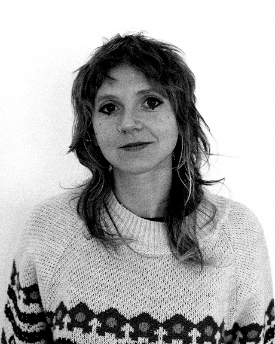

LeopardiVR
A VR experience for Meta Quest that lets people explore a poem in space. Designed, developed in C# and evaluated with 40 participants.
Read the case studyXR designer with a background in UX research and digital humanities.
A VR experience for Meta Quest that lets people explore a poem in space. Designed, developed in C# and evaluated with 40 participants.
Read the case study
I started with a degree in History in Bologna, then specialized in Digital Humanities at the University of Pisa, where I discovered my passion for virtual reality and for how people interact with it.
I model, code and test what I build with real people, to understand what works and what doesn't, and to make every experience clear and comfortable for everyone.
AUG 2026 – PRESENT
Designing user-testing methods and usability metrics for a conversational AI agent in a museum, from user journeys to feedback tools.
FEB – JUL 2026
Sole developer and interaction designer of LeopardiVR, from Unity architecture and 3D modeling to user testing with 40 participants.
2026
110/110 cum laude
2021
110/110 cum laude